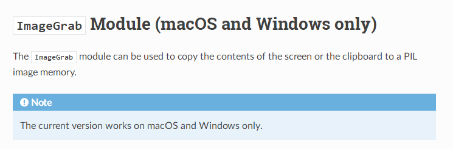
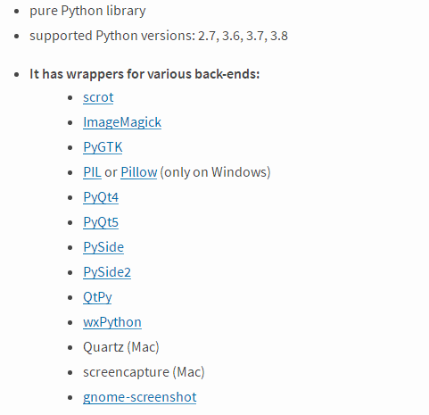
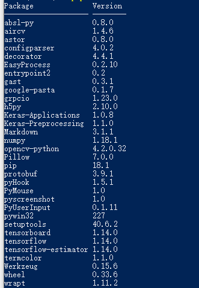

有时我们在编写自动化脚本时，会用到图片比对功能，比如：我们需要做一个游戏的辅助脚本，不管是网页游戏还是PC客户端游戏，会需要能够实现自动点击游戏中的一系列图标或图片，达到脚本辅助的目的。
本文介绍的图像比对大概思路是先通过截屏的方式保存完整的屏幕图片，然后再截取需要对比的图标或图片，最后调用python-opencv的相关函数实现图像比对，并输出比对结果（待比对的图标或图片的中心坐标以及置信度）。
实现图像比对需要事先安装的模块有：
- Pillow （python3.x）或 PIL（python2.x）
- pyscreenshot
- opencv-python
- aircv
下面先来介绍下Pillow和PIL，以及它们之间的关系。
关于Pillow与PIL
PIL简介
PIL(Python Imaging Library)是Python一个强大方便的图像处理库，名气也比较大。支持的版本为Python 2.5, 2.6, 2.7。
PIL官方网站：http://www.pythonware.com/products/pil/
Pillow简介
Pillow是PIL的一个派生分支，但如今已经发展成为比PIL本身更具活力的图像处理库，目前的最新版本是7.0.0。由于PIL只支持到Python2.7，所以在Python3上，我们使用Pillow来代替PIL。
Pillow的Github主页：https://github.com/python-pillow/Pillow
Pillow的英文文档：https://pillow.readthedocs.io/en/stable/
Pillow的文档中文翻译(对应版本v6.0.0)：https://www.osgeo.cn/pillow/
Python 3.x 安装Pillow
因为我电脑上同时安装了python2和python3，所以需要使用pip2或pip3来安装python2或python3的模块。如果你的电脑上只安装了一个python版本，那么直接使用pip来安装模块就可以了。
pip3 install Pillow |
安装完成后，使用from PIL import Image就完成库的导入了。例如：
from PIL import Image |
关于pyscreenshot
在本文一开始的时候，介绍说除了需要安装Pillow或PIL模块之外，还需要安装pyscreenshot。通过名称我们可以大致猜出来，这个模块是一个专门用来截屏的。而在Pillow或PIL模块中，有个ImageGrab模块，该模块主要用于将屏幕或剪贴板的内容复制到PIL图像存储器中，ImageGrab模块内部有个grab函数，功能也是截屏。
这时候你可能会问，既然ImageGrab.grab函数可以截屏，那为什么还要装个pyscreenshot来截屏呢？
要解答这个问题，我们需要看一眼Pillow的官方文档。

Pillow官方文档中写到，ImageGrab模块仅支持在MacOS和Windows上运行，所以如果我们想跨平台，比如在Linux上也能够截屏的话，就不能使用ImageGrab模块了。
那如果想在Linux上截屏的话，就要使用pyscreenshot模块了，而且pyscreenshot模块下也有个grab函数，其用法与Pillow中的ImageGrab.grab()基本一致，也支持全屏幕截图和指定区域截图。
简单来说，就是pyscreenshot支持跨Windows和Linux平台。
目前pyscreenshot的最新版本是1.0，2020年1月26日发布的。
根据pyscreenshot官方文档，安装该模块之前，需要事先安装下列模块之一：

Windows上安装pyscreenshot
需要先安装一下Pillow模块，然后再安装pyscreenshot就可以了。
pip3 install pyscreenshot |
Linux上安装pyscreenshot
需要先安装PyQt4模块，以在 Ubuntu18.04/Python3.7 环境下安装为例：
sudo apt-get install python-pip |
pyscreenshot核心函数
这里介绍一下我们接下来需要用到的grab函数。
grab
源码位于：Python37\Lib\site-packages\pyscreenshot目录下的 init.py 文件
函数原型
grab(bbox=None, childprocess=True, backend=None) |
函数说明
将屏幕内容复制到PIL图像存储器中，可全屏幕复制，也可以指定区域复制。
参数说明
本来准备翻译成中文的，结果发现可能翻译的不标准，所以直接贴上官方文档原文
- bbox – optional bounding box (x1,y1,x2,y2)
- childprocess – run back-end in new process using popen. This can isolate back-ends from each other and from main process.
- backend – back-end can be forced if set (examples:scrot, wx,..), otherwise back-end is automatic
pyscreenshot截屏示例代码
import pyscreenshot |
上述代码中的save函数和show函数，由于它们都属于Pillow模块，所以其源码位于：Python37\Lib\site-packages\PIL\Image.py
由此也可以看出pyscreenshot引入了Pillow作为其支撑模块之一。
参考资料：
截屏功能搞定之后，图片比对的功能就已经实现一半了。按照思路，接下来需要再将待比对的两张图片读取出来，然后调用一个图片比对的函数，来实现比对功能，并输出比对结果。
首先介绍下 OpenCV 和 AirCV 这两个东西。
OpenCV
OpenCV并不是python所独有的一个模块。OpenCV是一个基于BSD许可（开源）发行的跨平台计算机视觉库，可以运行在Linux、Windows、Android和Mac OS操作系统上，提供了Python、Ruby、MATLAB等语言的接口，实现了图像处理和计算机视觉方面的很多通用算法。
OpenCV的版本演化史- From 1.x To 4.0
OpenCV 1.x
OpenCV 最初基于C语言开发，API也都是基于C的，面临内存管理、指针等C语言固有的麻烦。
2006年10月1.0发布时，部分使用了C++，同时支持Python，其中已经有了random trees、boosted trees、neural nets等机器学习方法，完善对图形界面的支持。
OpenCV 2.x
当C++流行起来，OpenCV 2.x发布，其尽量使用C++而不是C，但是为了向前兼容，仍保留了对C API的支持。从2010年开始，2.x决定不再频繁支持和更新C API，而是focus在C++ API，C API仅作备份。
在2.0时代，opencv增加了新的平台支持，包括iOS和Android，通过CUDA和openGL实现了GPU加速，为Python和Java用户提供了接口。
OpenCV 3.x
随着3.x的发布，1.x的C API将被淘汰不再被支持，以后C API可能通过C++源代码自动生成。3.x与2.x不完全兼容，与2.x相比，主要的不同之处在于OpenCV 3.x 的大部分方法都使用了OpenCL加速。
从2017年12月开始的3.4.x版本，opencv_dnn从opencv_contrib移至opencv，同时OpenCV开始支持C++ 11构建，之后明显感到对神经网络的支持在加强，opencv_dnn被持续改进和扩充。
OpenCV 4.0
2018年10月4.0.0发布，OpenCV开始需要支持C++11的编译器才能编译，同时对几百个基础函数使用 “wide universal intrinsics”重写，这些内联函数可以根据目标平台和编译选项映射为SSE2、 SSE4、 AVX2、NEON 或者 VSX 内联函数，获得性能提升。此外，还加入了QR code的检测和识别，以及Kinect Fusion algorithm，DNN也在持续改善和扩充。
安装opencv-python模块
安装方式比较简单，只需一行命令：
pip3 install opencv-python |
参考链接：
AirCV
AirCV是一个基于Python-opencv2的目标定位模块，支持python2.7及以上版本。网上关于Aircv的介绍资料相对较少，我在这里做个简单的整理和汇总。
安装AirCV模块
我的电脑环境：Win10/Python3.7
由于AirCV是基于Python-opencv2开发的（对opencv2中的函数做了一层封装），所以需要先安装好opencv-python模块，然后再安装AirCV，安装命令如下：
pip3 install aircv |
安装完毕后，可通过pip3 list来查看当前所有已安装的模块。

然后在python代码中使用import aircv就可以导入aircv模块了。
FAQ：import aircv 出现no module named cv2的解决方案
重新安装下opencv-python模块即可。
打开cmd，输入pip install opencv-python。
AirCV的几个核心函数
AirCV模块的源码就一个文件 init.py，位于：Python37\Lib\site-packages\aircv目录下。
imread
函数原型
imread(filename) |
函数说明
图片读取
参数说明
filename：待读取图片的文件路径
返回值
返回的是一个含（图片高度、宽度、通道数）的三维元组，其实就是numpy.array类型。
兴趣延展：关于返回值的 “一探到底”
我们可以将imread的返回值，使用shape函数打印出来，例如：
import aircv |
运行后，会打印出类似下面的结果：
(220, 1000, 3)
上面这个就是一个三维数组，其前面两个值分别是图片的高度和宽度，最后面那个数字3，是代表每个像素点是由BGR三个元素组成。
find_template
函数原型
find_template(im_source, im_search, threshold=0.5, rgb=False, bgremove=False) |
函数说明
查找匹配的图片，并返回目标图片的中心点坐标和相似度
参数说明
- im_source：源图片
- im_search：待查找的图片
- threshold：阈值，当相似度小于该阈值时，就会被忽略掉，即返回值为None
返回值
- 如果匹配到，则返回目标图片的中心点坐标和相似度，如：(294.3, 13.6), 0.999765。这里可能要注意下，返回的中心点坐标不一定是整数。
- 如果未匹配到相似图片或相似度小于设定的阈值，则返回None。
find_all_template
函数原型
find_all_template(im_source, im_search, threshold=0.5, maxcnt=0, rgb=False, bgremove=False) |
函数说明
查找多个相同的图片，并返回这些相同图片的中心点坐标和相似度
参数说明
- im_source：源图片
- im_search：待查找的图片
- threshold：阈值，当相似度小于该阈值时，就会被忽略掉，即返回值为None
- maxcnt：设置最多匹配图片的数量，若设为0，则不限制数量。
返回值
如果匹配到多个相同图片，则返回包含多个目标图片的中心点坐标和相似度的列表，
例如：[((294.3, 13.6), 0.999765), …]
如果未匹配到相似图片或相似度小于设定的阈值，则返回空列表[]。
参考链接：
至此，我们就把Pillow(PIL)、pyscreenshot、opencv、aircv这几个核心模块介绍完了，最后我们一起来利用这几个模块来实现图像比对功能。
基于python的图像比对功能代码
import os |
运行后，会得到类似下面的结果：
匹配到图片：D:\python_demo\search.png |
上述演示了查找目标图片和找出多个相同图片位置的方法，其实使用aircv不仅可以实现在大图中找小图，而且还可以识别小图中的信息，比如识别出图片中的文字信息。这个功能可以用来识别一些网站上的动态验证码，关于这块，网上有个现成的帖子，供大家学习和参考：aircv 大图找小图 并识别小图中信息
到这里，本文的介绍就全部结束了。其实本文介绍的图像比对功能，我在很久之前做项目的时候就已经实现过，只是当时没有进行及时的梳理和总结，所以一直对这个功能里面所涉及到的知识点不那么清晰，在脑子里基本上是一团浆糊。
这次通过写博客的方式，我将所有涉及到的知识点以及可以延展的点都重新梳理了一遍，发现比之前要清晰很多，而且所有的知识点也都能串起来了。
虽然写博客往往需要花费大量的时间和精力，真正坐下来、静下心来写，但是我觉得写博客是一个利人利己、能够双赢的做法：一方面尽可能的给后来者一些参考，略尽绵薄之力，尽可能缩短他们走弯路的时间，加快学习效率；另一方面对自己脑袋中的知识点做个规整，把它们尽可能多的串起来，把思路都理顺，变成自己真正掌握了的知识点。